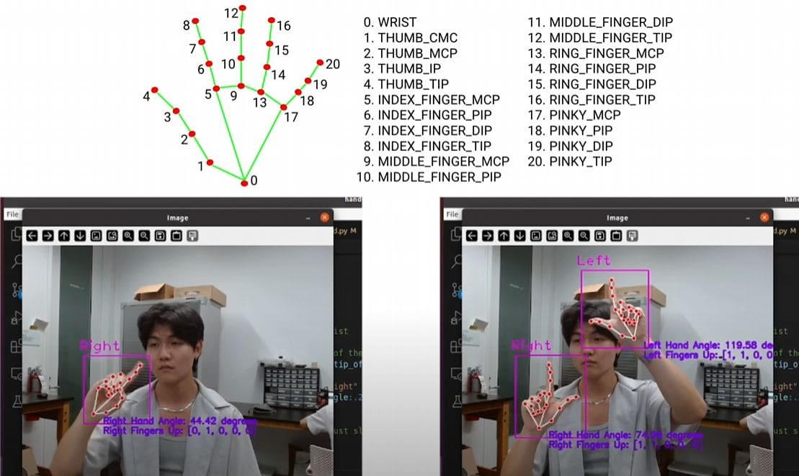
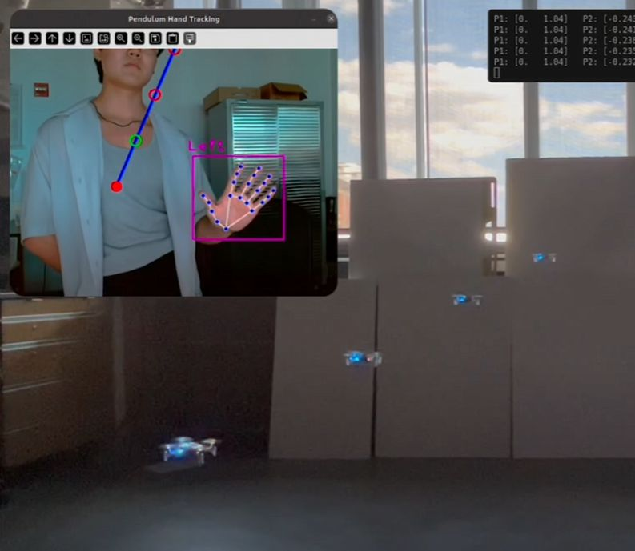
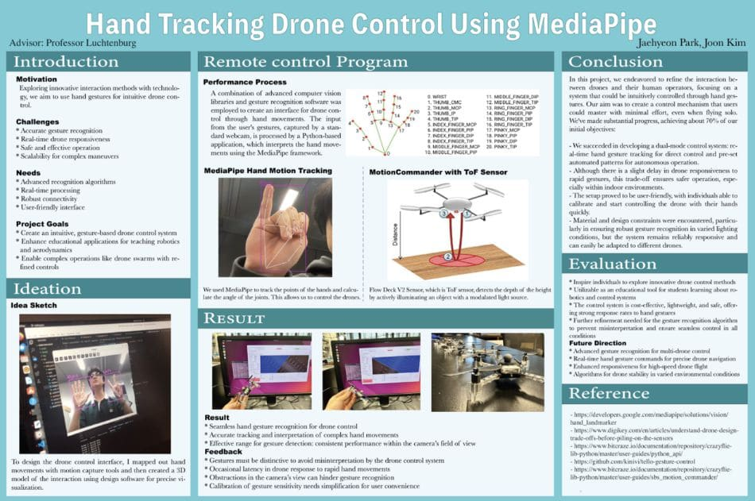
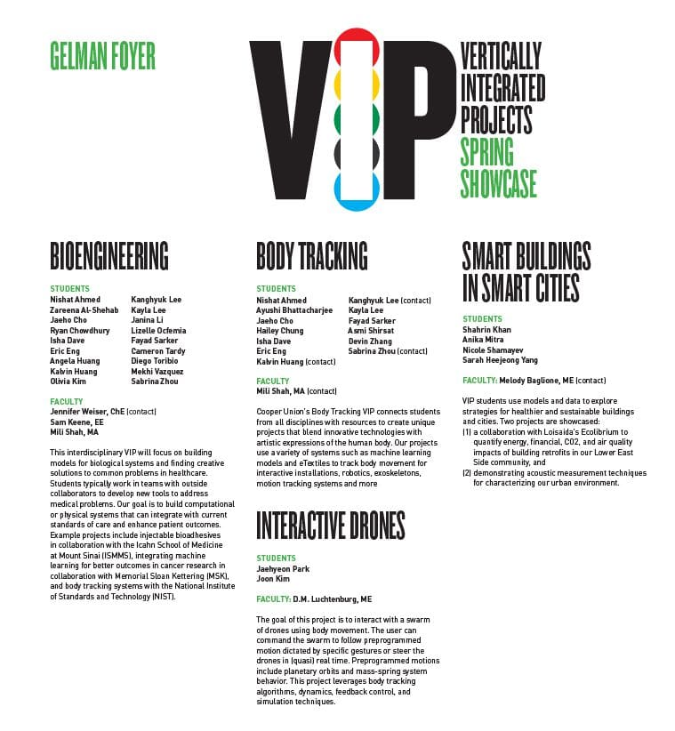
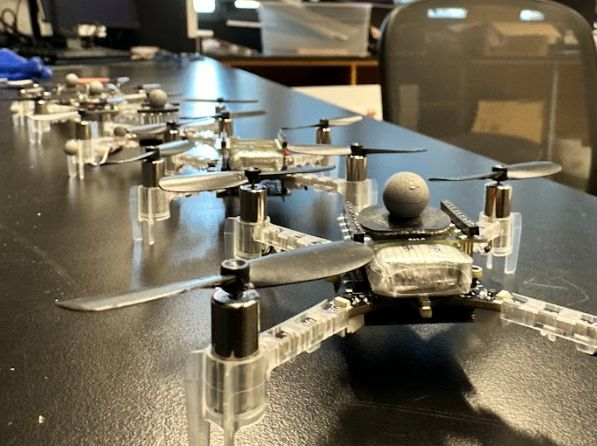
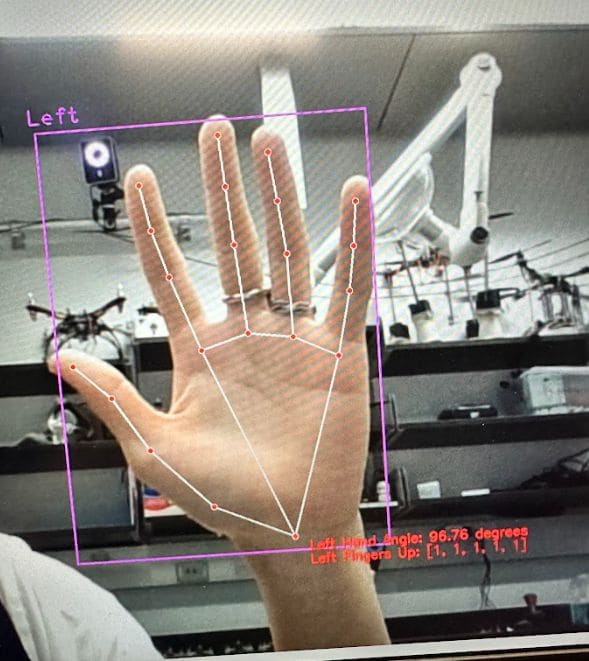
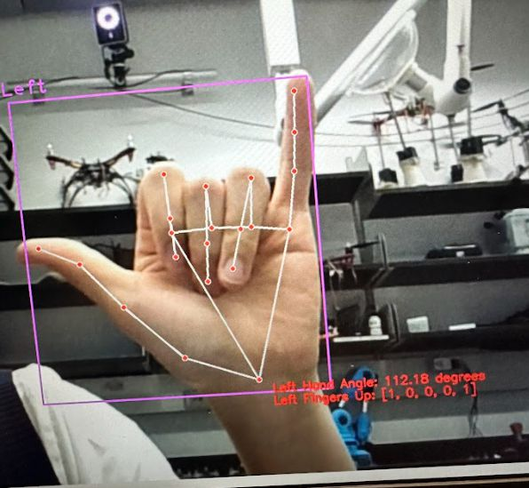
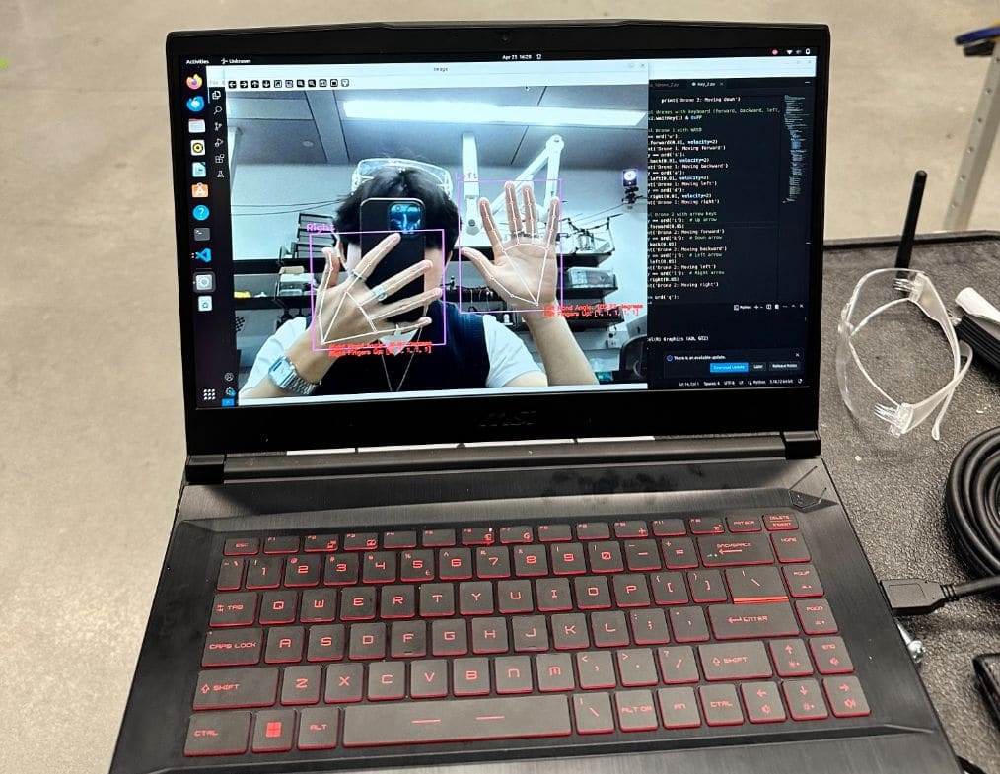

Motion Tracking Drone Control
A drone that follows your hand. A webcam tracks hand position and feeds it into the Crazyflie Python API in real time, turning gestures directly into flight commands. Getting it stable took work — this page covers what that took.
Project Update Note:

This was the first pass at combining hand tracking with drone control. The follow-up project, Interactive Drone Simulations of Dynamic Systems, takes it further.

Final Product
By the final iteration, the drone held a stable hover and responded to gestures with almost no lag. Getting there meant rewriting the gesture interpretation, tightening the data pipeline between webcam and drone, and tuning the control algorithm until it stopped overcorrecting.
Key Achievements
System Development
- Built a real-time pipeline: webcam feed → MediaPipe hand detection → gesture interpretation in Python.
- Fed that gesture data straight into the Crazyflie Python API as flight commands.
Integration & Optimization
- Cut the lag between hand tracking and the drone control script until the drone felt like an extension of the hand, not a delayed response to it.
- Added more advanced maneuvers once the basic hover held steady.

VIP Showcase & Recognition

- Presented the project at Cooper Union's VIP showcase, in front of engineers and faculty from outside the lab.
- Got invited back to present at follow-on showcase events.
- Secured additional funding to keep developing it.
- The feedback from that first showcase is what pushed the project into its next phase — the drone simulation work.
Development Process
Establishing Basic Control
The first version just had to prove the basic link worked:
- Wired up communication between the hand tracking system and the drone's API, with simple thrust control — up and down only, based on hand height.
- No stabilization system yet, so the drone drifted on its own between commands.
It was rough, but it proved hand gestures could fly a drone directly. Everything after this was about making that stable.



